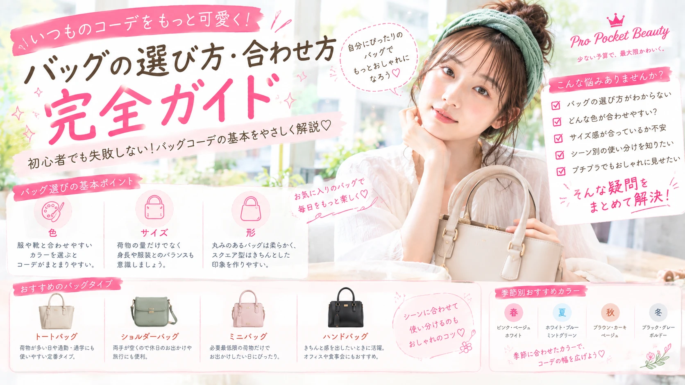

01
色
服や靴と色のバランスを考えると、 全体がまとまりやすくなります。

いつもの服にバッグを合わせるだけで、 コーディネートの印象は大きく変わります。 このページでは、初心者でも失敗しにくい バッグの選び方から色合わせ、シーン別コーデまで わかりやすく紹介します。
バッグは荷物を入れるだけではなく、 コーディネート全体のバランスを整えてくれるアイテムです。
シンプルな服装でもバッグの色や形を変えるだけで、 きれいめにもカジュアルにも見せられます。
「服は決まったけれど、バッグが何を合わせればいいかわからない」 という人は、まず色・サイズ・形の3つを意識してみましょう。
服や靴と色のバランスを考えると、 全体がまとまりやすくなります。
荷物の量だけでなく、 身長や服装とのバランスも意識しましょう。
丸みのあるバッグは柔らかな印象、 スクエア型はきちんとした印象を作りやすくなります。
初心者なら、まずは服に合わせやすい ベーシックカラーから選ぶのがおすすめです。
| バッグの色 | 合わせやすいコーデ | 印象 |
|---|---|---|
| ブラック | モノトーン・きれいめ | 大人っぽい・引き締まった印象 |
| ベージュ | 白・ブラウン・淡色コーデ | やわらかい・上品 |
| ブラウン | ベージュ・デニム・秋冬コーデ | ナチュラル・落ち着いた印象 |
| ホワイト | 春夏・淡色コーデ | 明るい・軽やか |
| 差し色 | シンプルな服装 | コーデのアクセント |
ベージュ、ブラウン、ホワイト系のバッグなら やさしい雰囲気にまとまりやすいです。
ブラックで統一すると大人っぽく、 明るいバッグを合わせると軽やかな印象になります。
バッグはベージュ、ブラック、ホワイトなど ベーシックカラーにするとバランスが取りやすくなります。
バッグを差し色にすると、 コーディネートのアクセントになります。
荷物が多い日や通勤・通学にも使いやすい定番タイプ。 シンプルなデザインなら普段着にも合わせやすく、 初めてのバッグにもおすすめです。
両手を空けられるので、 休日のお出かけや旅行にも便利。 カジュアルコーデと相性が良いタイプです。
必要最低限の荷物だけ持ちたい日にぴったり。 ワンピースやきれいめコーデにも合わせやすいです。
きちんと感を出したいときに活躍。 オフィスや食事会などにも使いやすい形です。
| シーン | おすすめ | ポイント |
|---|---|---|
| 通勤・通学 | トートバッグ | A4サイズなど必要な荷物が入るもの |
| 休日 | ショルダー・ミニバッグ | 動きやすさを意識 |
| デート | 小さめバッグ | 服装を邪魔しないサイズ感 |
| 旅行 | 大きめトート・ショルダー | 荷物の量と使いやすさを優先 |
必ず同じ色にする必要はありません。 バッグと靴の色味を近づけると統一感を出しやすくなりますが、 あえて違う色を合わせてアクセントにする方法もあります。
ブラック、ベージュ、ブラウンなどの ベーシックカラーは比較的コーディネートに取り入れやすいです。
普段持ち歩く荷物が少ないなら問題ありません。 ただし、財布・スマートフォン・ポーチなど、 必要なものが無理なく入るサイズを選ぶことが大切です。
はい。 バッグ単体の価格よりも、 コーデ全体の色・サイズ・素材感を揃えることがポイントです。
バッグ選びに迷ったら、 まずは色・サイズ・形の3つをチェックしましょう。
初心者の場合は、 ブラックやベージュなどのベーシックカラーから始めると 手持ちの服にも合わせやすくなります。
「高いバッグを買わないとおしゃれになれない」 ということはありません。 自分の普段の服装や生活スタイルに合ったバッグを選ぶことが、 使いやすくおしゃれに見せる一番のポイントです。